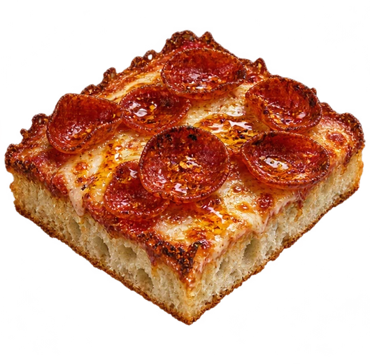

Wszystkie smaki
Z mięsem
Pepperoni po uszy
Pepperoni, mozzarella i sos pomidorowy.
Pepperoni zawija się w miseczki, ser skwierczy przy brzegu. Uważaj na pierwszego gryza. Drugi już bierzesz na własną odpowiedzialność.
18 zł za kawałek
Zacznij blachę od tego rogu